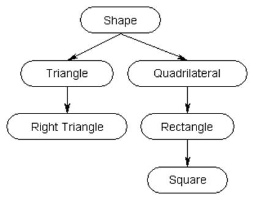

☰ Menu
Object Oriented Programming (OOP)
What is OOP?
Object Oriented programming, also known as OOP, is a way to simulate real-life situations through software. Rather than functions and logic involved in a typical program, OOP is a way to use coding to design data using objects.
Objects are instances of classes. An object is a specific entity made from a class that can be manipulated. Each object has behaviours defined by the class that created it. In order to create an object, a class is needed. A Class is an implementation/blueprint for creating objects with the same behaviour and defined attributes. Every instance of a class is assigned to an identifier variable. You will use that identifier to access the attributes and behaviors of the object. Attributes and behaviors of the object refer to the instance variables and methods respectively. Every single object has their own attributes and behaviors as per the class that it has instantiated.
Here is an example of how you would create an object of the Person class:
Person p1 = new Person("Bob");
In this example, p1 is an object created from the Person class and has taken parameter of "Bob" which is the name of the person (attribute of the object).
Encapsulation
Encapsulation is when the variables and methods are integrated as a single unit and making it so other classes cannot access them, and only the methods of the original class can. These are the two modifiers used for Encapsulation:
public: A public variable or method can be accessed and modified by any and all classes in the program.
private: A private variable can only be accessed within the same class it is declared in and cannot be accessed or modified by other classes.
Inheritance
Inheritance is when you create a subclass that extends the super class. A subclass inherits all the properties and methods from a main class, saving you the time of having to rewrite code.
In the hierarchy chart above, Shape is the main class that is inherited from. It has subclasses: triangle, right triangle and quadrilateral, rectangle, square respectively. The arrows symbolizing the inhertiance from the parent classes. You can see that triangle inherits from shape and right triangle inherits from triangle. However, quadrilateral, rectangle, and square are separate from triangle and right triangle. This means that they cannot inherit or access each others properties.
The super keyword is used to refer to the superclass within a subclass. It is used to access the superclass's constructor, methods, and/or attributes.
The this keyword refers to the current instance of a class. It is used within a class to refer to its own instance variables or methods as opposed to the ones inherited.
Here is a simplified coded version of the inheritance chart above:
public class Shape { //Shape class
private String shape; //variable
public Shape(String name) { //constructor
shape = name;
}
public void getShape(){ //getShape method
System.out.println("This is a " + shape);
}
}
public class Triangle extends Shape { //Triangle subclass inherits from Shape superclass
private int base; //variables
private int height;
public Triangle(String name, int b, int h) { //constructor
super(name); //super
base = b;
height = h;
}
}
public class Driver { //Driver class
public static void main(String[] args) { //main method
Shape s = new Shape("Circle"); //objects
Triangle t = new Triangle("Equilateral Triangle", 3, 6);
s.getShape(); //methods
t.getShape();
}
}
In this code, we can see that super(name) is called in the triangle subclass. We can also see that there is no method in the Triangle class. However, when t.getShape() is ran, "Equilateral Triangle" is printed because the getShape() method is inherited from the Shape superclass.
Method Overriding and Overloading
Method Overriding is when you create a method in the subclass that is the same as the parent class and modify it to be used for the subclass.
Method Overloading is the process of creating multiple methods with the same name in the same class, but different parameters.
Polymorphism
Polymorphism adds on to inheritance, in that it uses the inherited methods to perform certain tasks. More specifically, it is the act of executing an overidden non-static method from a class at runtime based on the actual object type.
A Method is polymorphic when its overridden in at least one subclass.
When object of a super class is set to reference object of a sub class, calling overridden methods will refer to those in the subclass. However, to call a method that’s exclusively in the subclass, you have to downcast the object:
((subclass) obj).getMethod();
Otherwise, a compile error will occur.
At compile-time, methods in or inherited by declared type (left of equal sign type) determine correctness of non-static method call.
At run-time, the method is executed from class of the actual type (right of equal sign) for a non-static method call.
Here is some sample code that including polymorphism:
//Animal Super Class
public class Animal {
public void animalSound() {
System.out.println("The animal makes a sound.");
}
}
//Cat Sub Class which extends Animal
public class Cat extends Animal {
public void animalSound() {
System.out.println("The cat goes meow.");
}
}
//Dog Sub Class which extends Animal
public class Dog extends Animal {
public void animalSound() {
System.out.println("The dog goes woof.");
}
public void animalSound2() {
System.out.println("The dog barks.");
}
}
//Driver Class
public class Driver {
public static void main(String[] args) {
Animal myAnimal = new Animal(); // Create a Animal object
Animal myCat = new Cat(); // Create a Pig object
Animal myDog = new Dog(); // Create a Dog object
myAnimal.animalSound();
myCat.animalSound();
myDog.animalSound();
((Dog) myDog).animalSound2();
}
}
The above code has three classes and a driver class. The Animal class is the super class, and the Cat and Dog classes are sub classes extend/inherit from the Animal super class.
When myAnimal.animalSound(); is ran, "The animal makes a sound." is printed. When myCat.animalSound(); is ran, "The cat goes meow." is printed. When myDog.animalSound(); is ran, "The dog goes woof." is printed. When ((Dog) myDog).animalSound2(); is ran, "The dog barks." If you run myDog.animalSound2(); without downcasting, the code would not compile because the Animal type cannot access the animalSound2 method in the Dog sub class.
Abstraction
Abstraction is the use of abstract classes and interfaces. Abstract classes cannot be instantiated and serve as a blueprint for derived classes. An abstract class allows you to create functionality that subclasses can implement or override. An interface only allows you to define functionality, but subclasses cannot implement it. They require a specific set of methods that the implementing classes must provide.
Arrays
Array Creation and Accessing Arrays
When array is created with new keyword, elements within the array are initialized to: 0 for an array of integers, 0.0 for an array of doubles, false for an array of booleans, and null for elements of reference type.
This is an example of how to declare an array:
DataType[] arrayName = new DataType[n]; //n is the length of the array
//declaring an array of intergers with length 10
int[] arr = new int[10];
In this array of integers, there are 10 elements and elements are all initialized as 0.
You can then add values to the array using a for loop such as this:
for (int i = 0; i < arr.length; i++) {
arr[i] = i;
}
If you want to initialize values of an array at the time of declaration, simply do this:
int array[] = { 1, 2, 3, 4, 5 };
The length of an array is final cannot be changed after the array is created.
Traversing Arrays
Elements of an array are accessed by:
array[index];
You can use the Arrays.length property to get the length of an array.
An array starts at index 0, then index 1, index 2, and so on. In the int array[] shown above, array[0] would be 1, array[1] would be 2, and so on.
There are two ways of traverse an array by using for loops.
Either you use the standard for loop:
for (int i = 0; i < array.length; i++) {
System.out.println(array[i])
}
Or you use a for-each loop:
for (int x : array){
System.out.println(x);
}
You can only change the values of an array in a standard for loop. It does not work with the for each loop.
There is also a way to display an array without using for loops. It is done using the Arrays.toString() method:
System.out.println(array.toString());
2D Arrays
A 2D array is very similar to a standard array, where it is also created using the new keyword, and elements within the 2D array are also initialized to the default value unless specified otherwise.
This is how you declare a 2D array:
DataType[][] nameOf2DArray = new DataType[rows][columns];
//declaring a 2D array of integers with 5 rows and 5 columns
int[][] arr2D = new int[5][5];
You can also initialize values of a 2D array at the time of declaration like arrays:
↓ columns
int[][] arr2D = {{1, 2, 3, 4, 5}, //row index 0
{6, 7, 8, 9, 0}, //row index 1
rows -> {1, 3, 4, 8, 5}, //row index 2
{7, 3, 2, 5, 1}, //row index 3
{4, 2, 5, 8, 9}} //row index 4
0 1 2 3 4
//column index
The number of rows in a 2D array is found with the 2Darray.length property.
The number of columns in a 2D array is found with the 2Darray[0].length property.
Traversing 2D Arrays
Elements in a 2D array are accessed by:
array[row][column];
There are two orders of traversing a 2D Array, row-major order and column-major order. Similar to arrays, you can traverse 2D arrays using either a nested for loop, or for each loop.
For row-major order: First you visit each row, then each column.
The outer loop is for rows, the inner loop is for columns.
Nested for loop:
for(int i = 0; i < arr2D.length; i++){
for(int j = 0; j < arr2D[0].length; j++){
System.out.println(arr2D[i][j]);
}
}
For each loop:
for(String[] row: arr2D){
for(String element: row){
System.out.print(element);
}
}
For column-major order: First you visit each column, then each row.
The outer loop is for columns, the inner loop is for rows.
Nested for loop:
for(int j = 0; j < arr2D[0].length; j++){
for(int i = 0; i < arr2D.length; i++){
System.out.println(arr2D[i][j]);
}
}
For each loops are not possible for column-major order.
ArrayLists
ArrayList Declaration
You declare an ArrayList in this format:
ArrayList variableName = new ArrayList();
If you want to set a length to your ArrayList, you use this format where n is the length of the ArrayList:
ArrayList variableName = new ArrayList(n);
ArrayLists are mutable, meaning they can be changed, including their size (They have dynamic sizes).
They are not designed for storing primitive data types, more or so they are used for storing reference data types.
ArrayList Methods
ArrayList is a class that contains methods, which can be used by importing java.util.ArrayList
Here is a list of ArrayList methods and what they do:
size() method - returns how many elements are in the ArrayList.
add(Element obj) - adds an element to the end of the ArrayList.
add(int index, E obj) - adds an element to an ArrayList at index.
remove(int index) - removes the element at index.
set(int index, obj) - sets the element at index.
get(int index) - returns the element at index.
Traversing Arrays
To access elements in ArrayList using a for loop, you need to use the get() method.
Example code of traversing an ArrayList and removing any values in the ArrayList less than 70:
for(int i = arrayList.size() - 1; i >= 0; i--){
if(arrayList.get(i) < 70.0){
arrayList.remove(i);
}
}
You cannot update the original ArrayList with a for loop
Searching & Sorting
Binary Search
Binary search is an efficient algorithm used for finding an element in sorted array/ArrayList. Binary search works only and only if the array is sorted.
Below is sample code of Binary Search for integer:
public static int binarySearch(int[] arr, int target, int low, int high) {
if(low > high) {
return -1;
}
int mid = (low + high)/2;
while(low <= high ){
if (arr[mid] < target){
low = mid + 1;
}else if (arr[mid] == target){
System.out.println("Element is found at index: " + mid);
break;
}else{
high = mid - 1;
}
mid = (low + high)/2;
}
}
First, you find the middle value of the low and high positions. Then you compare the middle value to the target value (The value you are looking for).
Based on whether the middle value is less or more than the target, the low position will be moved up, or the high position down.
Once the middle value is equal to the target value, the index of the middle value will be returned.
Once the low position crosses the high position, the entire array has been searched, but no value was found, so -1 is returned.
Selection Sort
Selection sort is a search-and-swap algorithm, this means that it will search for a value and swap that value.
In the case of selection sort, it is similar to sequential search, the sort will first traverse the array for the lowest value. Once it finds the lowest value, it will swap its position in the array with the data at index 0. Now the first element is sorted and in the correct position.
This process then repeats for index 1 and so on. The rest of the array will be searched for the lowest value excluding the values already sorted.
Note that if the lowest value is already in the correct position, it will stay there and nothing is swapped.
Below is an example implementation of Selection Sort:
public void selectionSort(int[] arr){
for (int i = 0; i < arr.length - 1; i++) {
int pos = i;
for (int j = i + 1; j < numbers.length; j++) {
if (arr[j] < arr[pos]) {
pos = j;
}
}
int temp = arr[i];
arr[i] = arr[pos];
arr[pos] = temp;
}
}
In this example, pos is the position/index of the smallest element in the array. The inner for loop checks for the smallest element in the array and assigns its index to pos. the element at index pos is then set to be the first value of the array, while the initial first value is assigned to a temp variable and then set at the index pos.
Insertion Sort
Rather than traversing the entire array like selection sort, insertion sort is a little less intuitive.
This sort compares the two elements and, depending on the comparison, it inserts the second value "in front" of the first value, moving the first value to the index of the second value. Then it compares the second and third, third and fourth, and so on.
This process is also then repeated until the entire array is sorted
Note that here, like selection sort, an already sorted element will remain in its position.
Here is an example implementation of Insertion Sort:
public void insertionSort(int[] arr) {
for (int i = 1; i < arr.length; i++) {
int temp = arr[i];
int j = i - 1;
while (j >= 0 && arr[j] > temp) {
arr[j + 1] = arr[j];
j--;
}
arr[j + 1] = temp;
}
}
In this example, temp is the second value in the array is assigned to temp. If the first value at index j is larger than the second value (temp), then the first value becomes the second value and the second value becomes the first value. If the second value is larger than the first value, then nothing changes.
Recursion
Introduction
Recursion is a programming technique where a method invokes itself to solve a problem by breaking it down into smaller, simpler sub problems. All recursive methods contain two components the base case and the recursive case.
The base case is the condition that specifies when the recursive method is stopped and returns a value. It contains the simplest version of the problem that can be solved directly without further recursion. The base case ensures that the recursive calls eventually terminate, so that there isn't an infinite loop of recursive calls. This is why a base case is required in all recursive methods that way the method can terminate.
The recursive case repeatedly breaks the main problem into smaller sub problems in order solve the problem. This contains the recursion part of the method, as the method recursively calls itself. Each recursive call is intended to handle a smaller input, slowly moving to the base case.Here is an example of recursive method factorial(), which calculates the factorial of a number.
public static int factorial(int n) {
if (n == 0 || n == 1) { //base case
return 1;
} else { // Recursive case
return n * factorial(n - 1);
}
}
In this method, we can see that in the recursive case, the method calls itself at factorial(n-1). That is what is called a recursive call, when a method calls itself with a modified input.
Merge Sort
Merge sort is a sorting algorithm that utilizes recursion.
Merge sort works by splitting the initial array into smaller sized sub ararys.